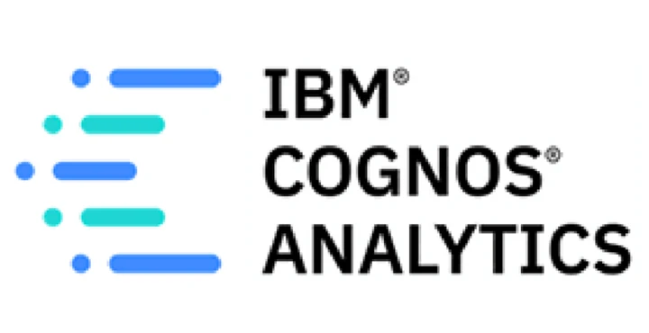
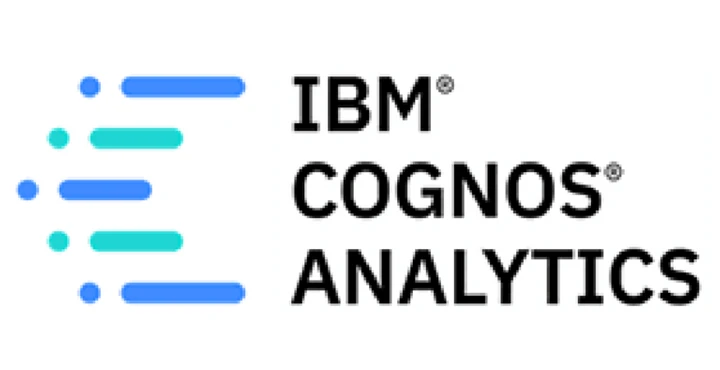

Experiences
Avril à Juin 2022 Stage Professionnalisant 2 Observatoire du Numérique Nouméa
Dossiers techniques :- Élaboration d’une matrice de définition, de qualification et d'usages possibles de données collectées auprès des partenaires
- Identification et mise en oeuvre des moyens techniques de collecte et diffusion des données qualifiées
Avril à Juillet 2021 Stage Professionnalisant DINUM Nouvelle-Calédonie
Dossiers techniques :- Refonte d’une base de données
-Traitement de données sous Cognos analytics et étude d’une migration de logiciel d'analyse statistiques (Cognos vers Google DatasStudio)
- Animation de réunions techniques
 
